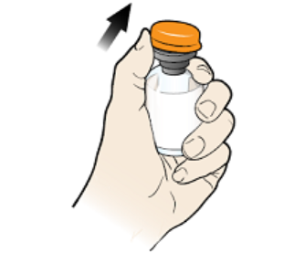
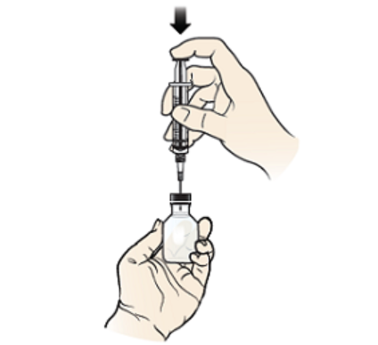
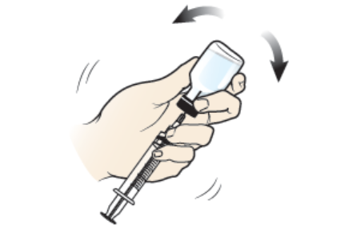
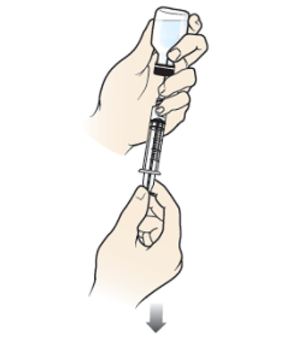
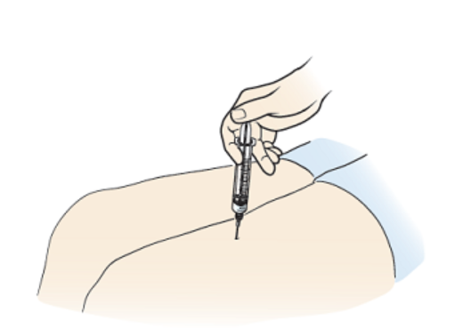

Background
Glucagon injection is an emergency medicine used to treat severe hypoglycemia (low blood sugar) in diabetes patients treated with insulin who have passed out or cannot take some form of sugar by mouth. An emergency glucagon injection kit is an intramuscular medication. An intramuscular injection goes directly into the muscle. Emergency glucagon injection kits do not come ready to use like some other treatments. You will need to get it ready right before you use it.
Where to find
Glucose injections are available through prescription only, and are not found over the counter.
How to administer
To give the injection, you'll need the glucagon emergency kit and an alcohol swab.
-
Open the glucagon kit.Take the cap off of the glass vial with the glucagon powder.
 -
Pick up the prefilled syringe and remove the needle cover. Push the needle into the center of the rubber stopper. Slowly push down on the syringe plunger to inject all the liquid into the glass vial. Do not remove the needle from the vial.
 -
Gently shake or roll the vial to mix it. Hold the vial and syringe in one hand with the vial on top and syringe on bottom. Mix until all powder is completely dissolved. The solution should be clear and colorless. You may see bubbles from mixing. This is normal. Do not use the medication if it’s cloudy or you see solid particles that do not go away after mixing. Call 911 right away.
 -
Keep holding the vial and syringe with the vial on top and the syringe on bottom. Move the tip of the needle towards the bottom of the vial near the rubber stopper. Pull back on the plunger of the syringe to fill the syringe with all the medication in the vial. If there is air at the top of the syringe, gently push the plunger to remove it.
 -
Choose an injection site. You can inject glucagon into the top of the thigh (upper leg), outer buttock area, or upper outer arm. Clean the site with an alcohol swab, if you have one. Inject the glucagon into the muscle. Insert the needle into the skin in one quick motion at a 90-degree angle (straight up and down). Use your thumb to push the plunger all the way down to inject the medication.
Only inject the glucagon through the person's clothing if you cannot remove the clothing from the injection site quickly.
 -
When the syringe is empty, pull it straight out of the skin.
After administering
If the person is awake after 15 minutes:
- Check their blood sugar and if it is still below 70 mg/dL, follow the rule of 15/15; eat 15g of carbs and recheck blood sugar after 15 minutes.
- If their blood sugar is 70 mg/dL or higher, have them eat a snack or meal within one hour. This can include:
- Peanut butter or cheese with 4 to 5 crackers.
- Half of a sandwich and 4 ounces of milk.
- A single-serve container of Greek yogurt.
If the person is not awake after 15 minutes:
- Give them a second emergency treatment, if they have one.
- Wait for emergency services to arrive.
How to prevent common errors that may lead to emergency:
- Consistently monitor blood sugar
- Eat regularly and don't skip meals
- Carry snacks that help improve blood sugar; eat the minute you feel any signs of shakiness, sweating, headache, hunger, fast heartbeat, confusion, heart palpitations, and anxiety
Sources:
[1] Mayo Clinic Glucagon Injection
[2] How to use an emergency glucagon injection kit | Memorial Sloan Kettering Cancer Center